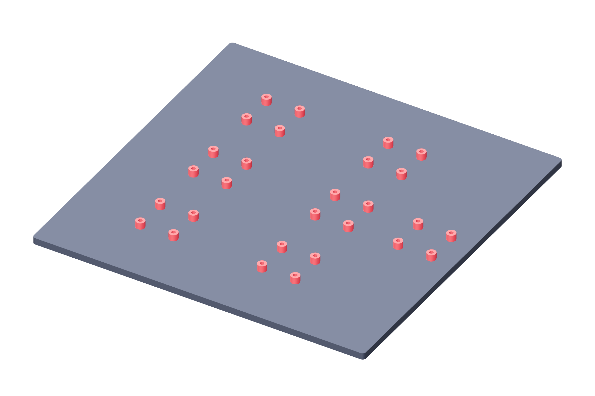

Controller / mounting112 / 179
Mount the boards above the blank
Four 6 mm insulating spacers support every carrier and the Pico adapter. The remaining fixed components fasten directly to the blank.
Add28 printed spacers · 36 M3 × 25 · 36 M3 locknuts · 72 M3 washers
Tools / setupAll power unplugged · small hex / nut driver · continuity meter

| Allocation | Installed hardware |
|---|---|
| Carriers / Pico | 24 / 4 bolts; four spacers under each board |
| DIN / fuse / fan base | 2 / 4 / 2 bolts; direct blank mounting |
- Use a washer at both ends of each M3 × 25 joint and a locking nut; keep the carrier/Pico copper clear of metal washers.
- Keep the 6 mm board standoff. Unplug USB and 24 V before trimming excess leads; verify visible clearance from the blank and all mounting metal, then recheck cold isolation.
- Measure the actual stack; retain two full threads beyond each nut. Re-meter every mounted carrier’s net isolation.
Ready when
All 36 joints are seated, every board remains insulated and clear, and the unpopulated sockets still pass the received-pin continuity map. A board bend, copper-to-fastener connection or short projection fails mounting. Unplug and correct the actual spacer/washer/hole stack before wiring.